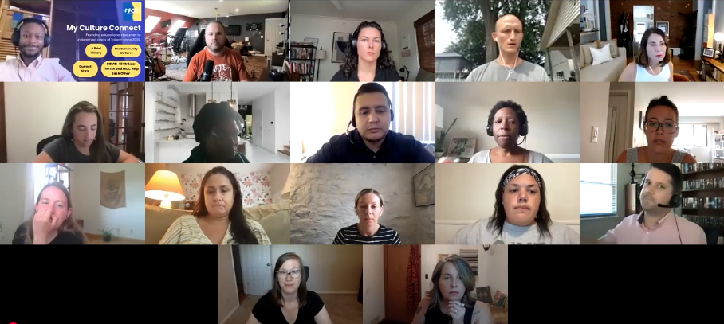

Get involved
How My Culture Connect can help your ESL certification program — and how anyone can volunteer to make a difference.
Two ways to get involved
Whether you're earning ESL/TEFL certification hours or simply want to volunteer your time, there's a place for you here.
For ESL/TEFL certification candidates who need practicum hours — classroom observations, tutoring, and co-teaching.
See practicum paths →For high school and college students who want to mentor young learners in Taiwan — no certification needed.
Explore Guiding Hands →Practicum Opportunities
In 2020 with the onset of the COVID-19 pandemic, many students seeking ESL certifications and needing practicum hours struggled to find opportunities since most schools were temporarily closed. Even once reopened, many struggled to transition to an online learning environment even for their own students, so they had even less capacity to create student teaching for those seeking ESL certifications. This is where My Culture Connect (MCC) truly shone, offering ESL certification candidates a way to earn practicum hours online—not only through observations but also through tutoring and co-teaching! MCC has continued to provide online practicum opportunities to this day, ensuring that student teachers have flexible and accessible ways to meet their certification requirements. Here's how we help student teachers succeed:
Classroom observations are one of the foundations of any new teacher training program because it allows the student teacher to see the information they've learned in the textbook put to practical use. Depending on the time of year, MCC offers a variety of observation opportunities from observing actual English classes taking place at schools throughout rural Taiwan during the regular school year, to special English education programs led by certified ESL teachers during winter and summer breaks. Classes vary in length: 40 minutes for elementary schools, 50 minutes for junior high schools, and up to a full hour for our special programs during school breaks. All observations are conveniently held over Google Meet, so the only requirement is ensuring that you have set up a free account on these platforms.
One of the biggest educational challenges rural areas face when learning English is a lack of exposure to native English speakers. Having the chance to speak with and learn from a native English speaker is a valuable experience for students in these areas. As most ESL certification programs require student teachers to have actual tutoring or teaching experience as a part of their practicum, this is a great way for student teachers to volunteer their time and obtain practicum hours. MCC has a wide range of students seeking native English speaking tutors: different ages, language levels, adult learners, and even some Taiwanese English teachers wanting to freshen up their English language skills. Tutoring is often the most flexible volunteer opportunity as you are able to work directly with the student you will be tutoring on times that work best for both of you. While this is true, keep in mind that school age students are in school during the day in Taiwan, which is 13 hours ahead of eastern standard time (12 hours DST) in the US, so this can limit their availability during the school year to the evenings (early morning in North America).
Co-teaching is the most advanced form of volunteering that student teachers have the opportunity to complete with MCC. Co-teaching involves working with a Taiwanese English teacher at an elementary or junior high school. Co-teachers are typically provided with the curriculum currently being covered in the class, and build a lesson plan based on the topic being covered. When co-teaching, the emphasis should be on getting the students to practice their listening and speaking skills, since this is often what they lack without having much exposure to native English speakers. The co-teacher is encouraged to plan lessons with fun activities and utilize different forms of media (e.g., presentations, YouTube videos, audio files, etc.) to enhance their students' classroom experience. Similar to observations, classes are held on Google Meet, so you will be required to have accounts on these platforms.
Already a volunteer? Open ready-to-teach 60-minute lesson kits, or the full step-by-step guide to observation, tutoring, and co-teaching.
See it in action
See how experienced MCC teachers run their online lessons with students in rural Taiwan — a helpful model as you picture your own practicum sessions.
A bonus for our teachers
Luke, MCC's director, also runs a free site — AI for Teachers — showing educators how to plan lessons, build worksheets and games, and create materials with AI. Once you're volunteering with us, you can send him your own AI teaching questions, and he'll answer them with dedicated pages on the site.
Visit AI for TeachersContact Us
Here at MCC, we see our collaboration with ESL certification organizations as a win-win. Student teachers are able to get the experience and support they need to make them better educators, while the young English learners living in rural areas of Taiwan get to have native English speakers as tutors and teachers help them grow in their language abilities. For more information, feel free to contact our executive director Luke Lin, whose information is provided below.
Volunteer Opportunities
Have you ever thought about sharing your skills to help others while forming meaningful friendships across the globe? With Guiding Hands, you have the opportunity to volunteer as an English tutor for elementary and middle school students in Taiwan. This program connects high school and college students from English-speaking countries with enthusiastic young learners in Taiwan, creating a unique experience that's as rewarding for the tutors as it is for the students.
Help students in Taiwan improve their English skills, boost their confidence, and open doors to future opportunities. Your guidance can inspire them to dream big and achieve more.
Connect with eager students from Taiwan, exchange cultural insights, and form bonds that transcend borders.
Tutoring is a two-way street—you'll develop valuable communication, teaching, and leadership skills while gaining a deeper understanding of Taiwanese culture.
By volunteering as an English tutor, you'll not only help others succeed but also grow personally and academically. This is your chance to be part of something bigger: bridging cultures, inspiring young minds, and building brighter futures through education. If you're ready to make an impact while enriching your own life, we'd love to have you join us. Together, let's use the power of English to connect, inspire, and change lives—one guiding hand at a time.
A recognized leader
We're proud to share that My Culture Connect (MCC) was selected for the International TEFL Academy (ITA) Charity Highlights for Q3 2022. This recognition underscores our commitment to creating impactful opportunities for aspiring English teachers and empowering students in Taiwan through education.
The International TEFL Academy (ITA), headquartered in Chicago, Illinois, is a globally respected organization dedicated to providing meaningful TEFL certification and travel experiences to English teachers around the world. Being featured as one of ITA's Charity Highlights is a testament to the meaningful work we do in connecting passionate educators with eager learners in rural Taiwan.
Through MCC's practicum program, we offer aspiring TEFL-certified teachers the chance to hone their teaching skills while making a real difference in the lives of young students. This program not only helps students in Taiwan practice English and broaden their horizons but also allows educators to gain invaluable teaching experience in a supportive environment.
We're honored by this recognition and remain dedicated to fostering cultural exchange, bridging communities, and supporting education as a pathway to a brighter future.

In their words
“I first heard about MCC while I was completing my online TEFL course with ITA. At the time, I was looking for a way to complete my practicum. During my first conversation with Luke, I could tell how passionate he was about teaching English to students in Changhua County. I began observing classes with MCC right away and was instantly impressed with the coordination between MCC and remote EFL teachers, the range of topics and activities in lessons, and the progress students made. I continued my practicum with co-teaching classes over Skype and since have continued to work with MCC after becoming TEFL certified. Every time I teach a class, I come away with a huge smile on my face. MCC's values of community, fun, and passion in education create a wonderful environment to work in. I am excited to continue my journey with MCC and cannot wait to see what the future holds for the community of students and teachers they connect with.”
TEFL-certified teacher
“I am a retired educator. The past decade I have been a volunteer teacher for the Taiwanese educational non-profit, My Culture Connect. MCC provides English education and cultural exchange support to underserved rural schools in Taiwan. I live in Wisconsin, USA, and travel regularly to Changhua County in central Taiwan for 4–6 weeks at a time. When there, I live with my Taiwanese colleagues and we volunteer/teach in schools five days a week. When home in the USA, I regularly teach Skype lessons to Taiwanese schools.”
Volunteer educator · Wisconsin, USA
What to do next
Contact our executive director, Luke Lin — and tell us your city, state, and country.
Email Luke Lin Availability form